*
Треугольник

# Треугольник — геометрическая фигура, образованная тремя отрезками,
которые соединяют три точки, не лежащие на одной прямой.
Указанные три точки называются вершинами треугольника, а отрезки — сторонами треугольника.
# Треугольники бывают трех видов: прямоугольный (один из углов равен 90 градусов), равнобедренный (две стороны равны)
и равносторонний (все стороны равны).
# Сумма углов треугольника равна 180 градусов.
# Напротив большего угла лежит большая сторона.
# Главное правило существования треугольника: в треугольнике сумма двух сторон должна быть больше третьей стороны.
# Если квадрат большей стороны треугольника меньше суммы квадратов двух других сторон, то этот треугольник - остроугольный.
# Если равен, то этот треугольник - прямоугольный.
# Если больше, то этот треугольник - тупоугольный.
# Средняя линия треугольника - отрезок, соединяющий середины двух сторон.
# Средняя линия треугольника параллельна третьей стороне и равна половине этой стороны.
# Средняя линия отсекает от треугольника треугольник подобный исходному, коэффициент подобия равен 1/2.
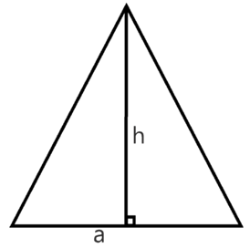
Формулы площади треугольника
# Площадь треугольника равна полу произведению стороны на высоту, проведенную к этой стороне:
S = ah / 2
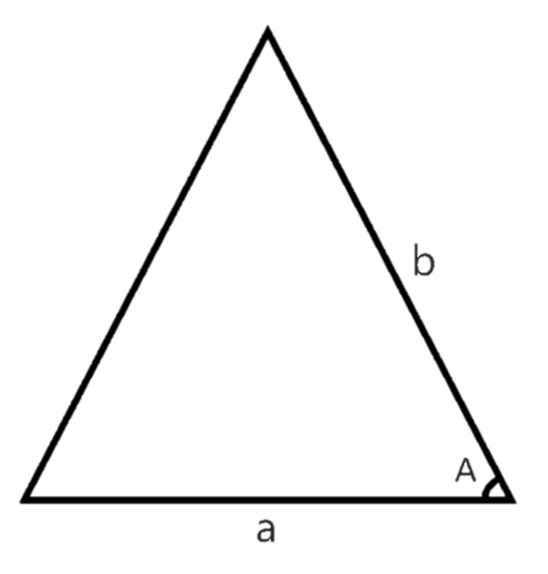
# Площадь треугольника равна половине произведения двух его сторон на синус угла между ними:
S = a * b / sin<A
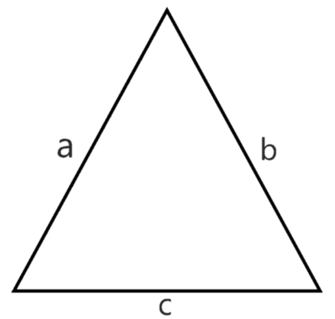
# Площадь треугольника равна квадратному корню из произведения его полупериметра на разности
полупериметра и каждой из его сторон:
S = √p*(p-a)*(p-b)*(p-c)
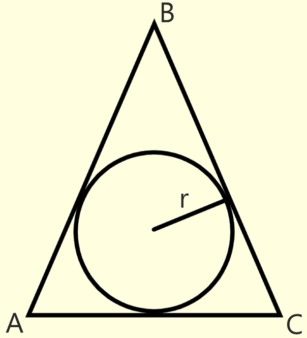
# Площадь треугольника равна произведению полупериметра этого треугольника на радиус вписанной окружности:
S = ((AB + BC + AC) / 2) * r
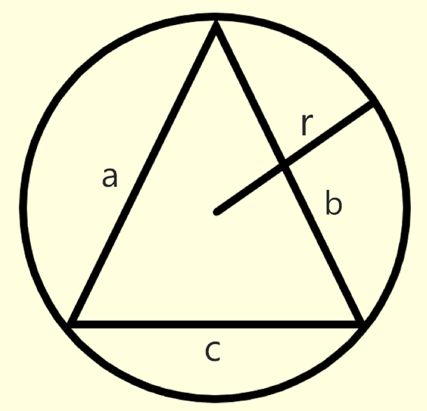
# Площадь треугольника равна частному от деления произведения сторон треугольника на четыре радиуса
описанной окружности:
S = (a * b * c) / 4r
Равенство треугольников
# Равные треугольники - треугольники, у которых равны все стороны, углы и прочие элементы (площадь, соответственные биссектрисы, и т.д.) равны.
# Признаки равенства треугольников:
- Если две стороны и угол между ними одного треугольника соответственно равны двум сторонам и углу между ними другого треугольника, то такие треугольники равны.
- Если два угла и сторона между ними одного треугольника соответственно равны двум углам и стороне между ними другого треугольника, то такие треугольники равны.
- Если три стороны одного треугольника соответственно равны трем сторонам другого треугольника, то такие треугольники равны.
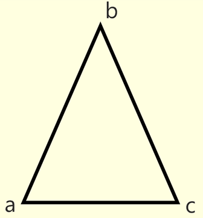
Подобие треугольников
# Подобные треугольники — треугольники, углы у которых соответственно равны, а стороны соответственно пропорциональны.
# Признаки подобия треугольников:
- Если две стороны одного треугольника пропорциональны двум сторонам другого треугольника, и углы между ними равны, то такие треугольники подобны.
- Если два угла одного треугольника двум углам другого треугольника, то такие треугольники подобны.
- Если три стороны одного треугольника пропорциональны трем сторонам другого треугольника, то такие треугольники подобны.
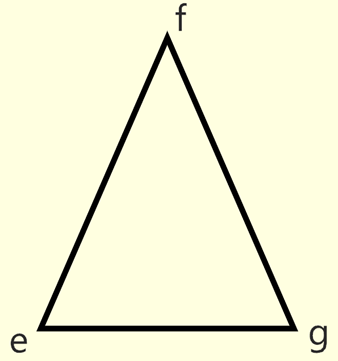
# Коэффициент подобия треугольников
- Коэффициент подобия - отношение соответственных сторон подобных треугольников. Обозначается буквой "k"
- Отношение периметров подобных треугольников рано коэффициенту подобия. Pabc / Pefg = k
- Отношение площадей подобных треугольников рано коэффициенту подобия в квадрате. Pabc / Pefg = k^2
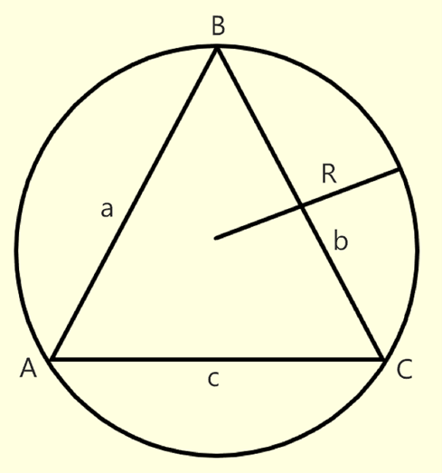
Теорема синусов
# В треугольнике отношения сторон к синусам противоположенных углов равны между собой и равны диаметру описанной окружности.
a/sinC=b/sinA=c/sinB=2r
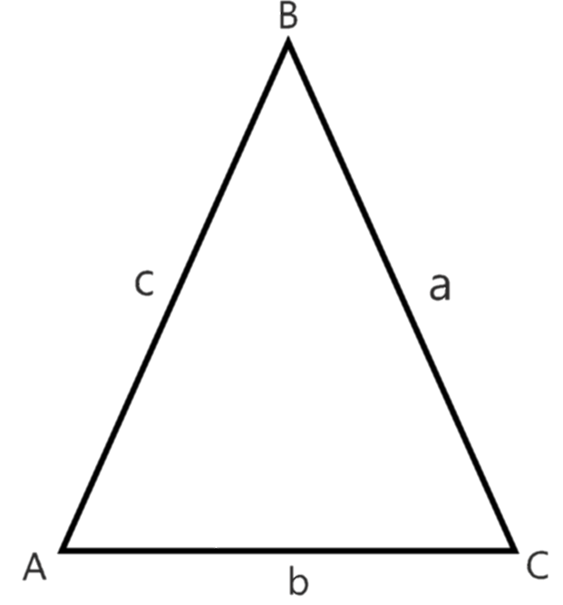
Теорема косинусов
# Квадрат стороны треугольника равен сумме квадратов двух других сторон минус удвоенное произведение этих сторон, умноженное на косинус угла
между ними.
a^2 = b^2 + c^2 - 2bc*cos<A
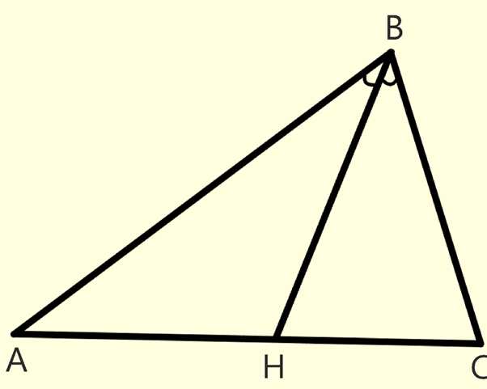
Теорема о биссектрисе треугольника
# Биссектриса, проведенная из угла треугольника, делит противоположенную сторону на два отрезка, которые пропорциональны соответствующим прилежащим сторонам треугольника.
BC / AB = HC / AH
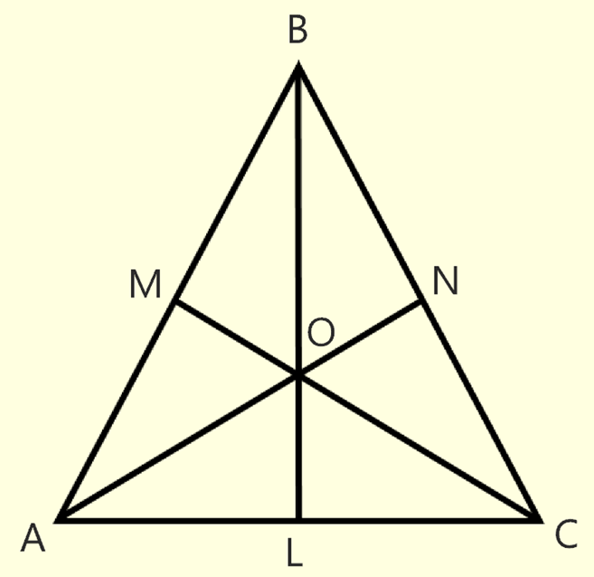
Теорема о точке пересечения медиан треугольника
# В треугольнике все медианы пересекаются в одной точке и этой точкой делятся в отношении 2:1, считая от вершины.
AO/ON=BO/OL=CO/OM=2/1
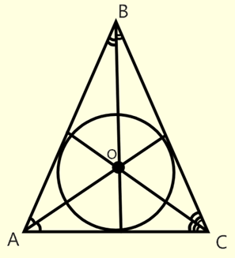
Теорема о точке пересечения биссектрис треугольника
# Точка пересечения биссектрис треугольника является центром вписанной в этот треугольник окружности. Точка О - центр вписанной окружности.